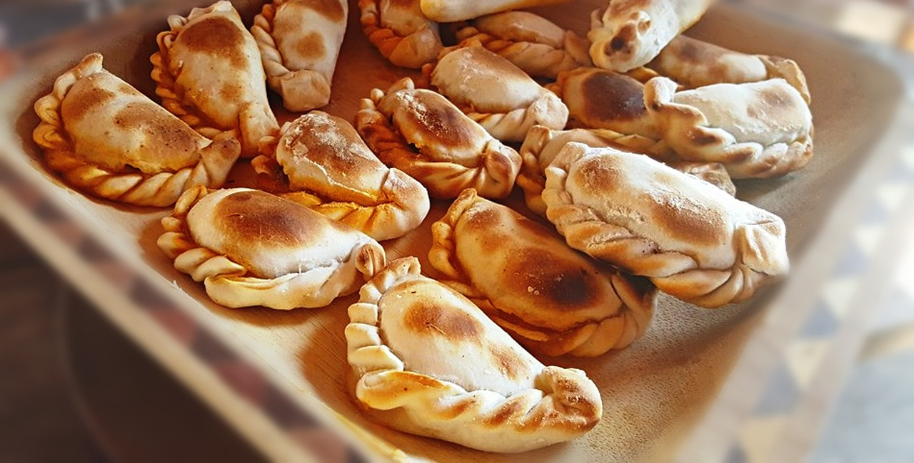
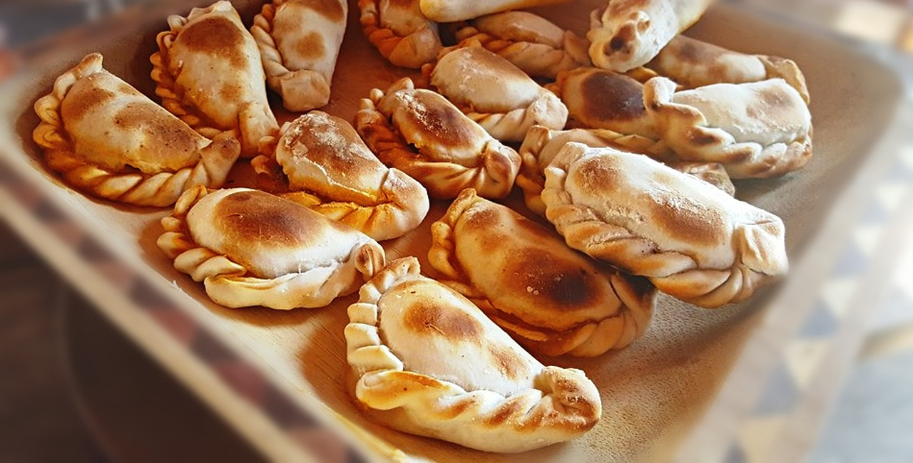

Empanada recipe
Empanadas
 



Empanadas are a type of pastry that is common in many countries,
particularly in Latin America. They consist of a pastry dough that is
filled with a variety of ingredients, such as meat, cheese, vegetables, and spices.
The filled dough is then folded over and sealed, before being baked or fried.
Empanadas can be served as a main dish, a snack, or as a dessert, depending on the filling.
They are a popular and versatile food that can be enjoyed in many different forms and flavors.
Ingredients
- 1 lb Ground beef
- 1 medium Onion chopped
- 2 cloves of garlic, minced
- 1 red bell pepper, chopped
- 1 teaspoon cumin
- 1 teaspoon dried oregano
- Oil for frying
- Salt and pepper to taste
- 1/2 cup of beef broth
- 2 tablespoons of olive oil
- 2-3 tablespoons of all-purpose flour
- 1 package of empanada dough
- 1 egg, beaten, for egg wash
- In a large pan, heat 1 tablespoon of oil over medium heat.
- Add 1 diced onion and 1 minced garlic clove to the pan, and cook until the onion is translucent.
- Add 1 pound of ground beef to the pan, and cook until browned, about 10 minutes.
- Stir in 1 teaspoon of ground cumin, 1 teaspoon of paprika, and 1/2 teaspoon of salt.
- Add 1 cup of beef broth to the pan and simmer until the mixture has thickened, about 10 minutes.
- Allow the beef mixture to cool completely.
- Preheat oven to 400°F (200°C).
- Roll out empanada dough on a floured surface to 1/8-inch thickness.
- Cut out circles from the dough with a 4-inch round cookie cutter or a glass.
- Place 2 tablespoons of the beef mixture in the center of each dough circle.
- Fold the dough over the filling to form a half-moon shape, and press the edges together with a fork to seal.
- Bake the empanadas for 20-25 minutes, or until golden brown.
- Oh empanada, wrapped in crust and love,
- A delicious treat from heaven above.
- Stuffed with meat, cheese, and all the spices,
- A flavor that surely entices.
- Golden brown, crispy, and oh so warm,
- Perfect for a hungry belly to disarm.
- With each bite, your taste buds will dance,
- Leaving you with a smile and a chance
- To enjoy this culinary delight,
- From dawn to dusk, day and night.
- So let's raise a fork and give a cheer,
- To the empanada, truly a feast fit for a king, my dear!
- Dulces como el amor, suaves como un beso,
- las empanadas argentinas son un manjar del cielo.
- Con su masa crocante y su relleno caliente,
- son la promesa de una noche inolvidable y contente.
- Cada mordida es un viaje al corazón de Argentina,
- donde la comida y el amor son parte de la vida.
- Compartir una empanada es compartir un pedazo de alma,
- un momento íntimo y romántico, sin paralelo.
- Así como las empanadas nunca pierden su sabor,
- nuestro amor también perdurará, hoy y siempre, amor.
- Juntos comeremos, sin ningún tipo de temor,
- las empanadas que nos hacen soñar con amor.